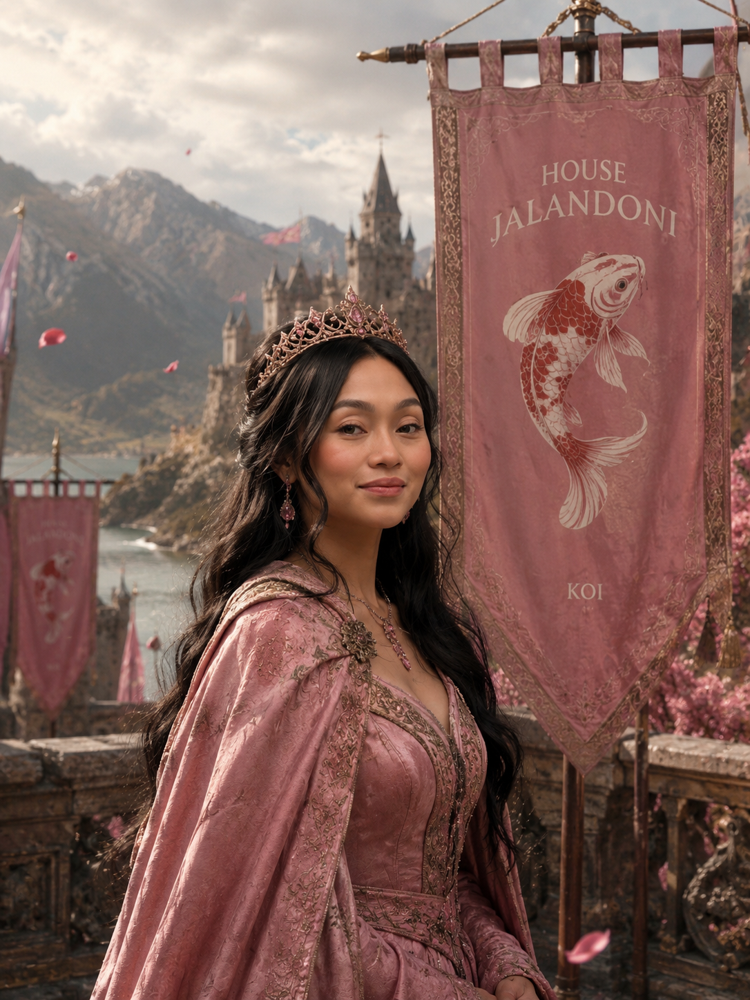
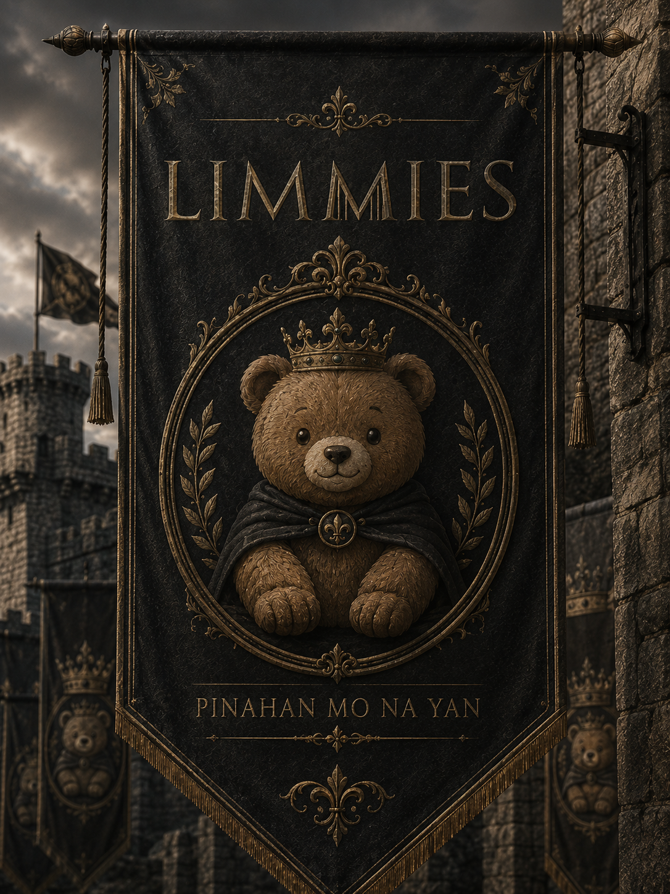
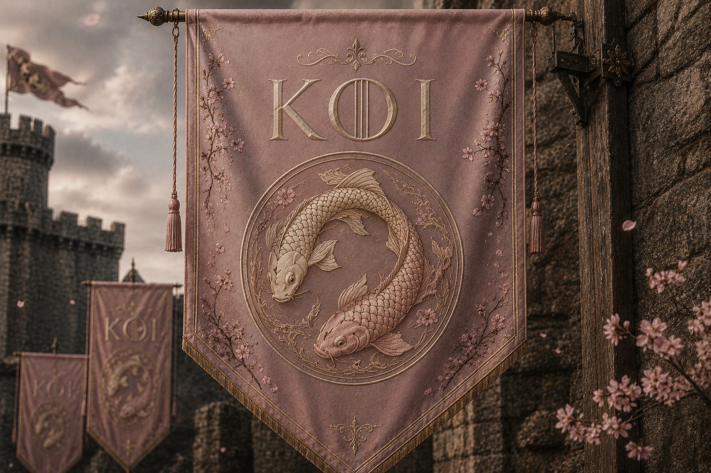
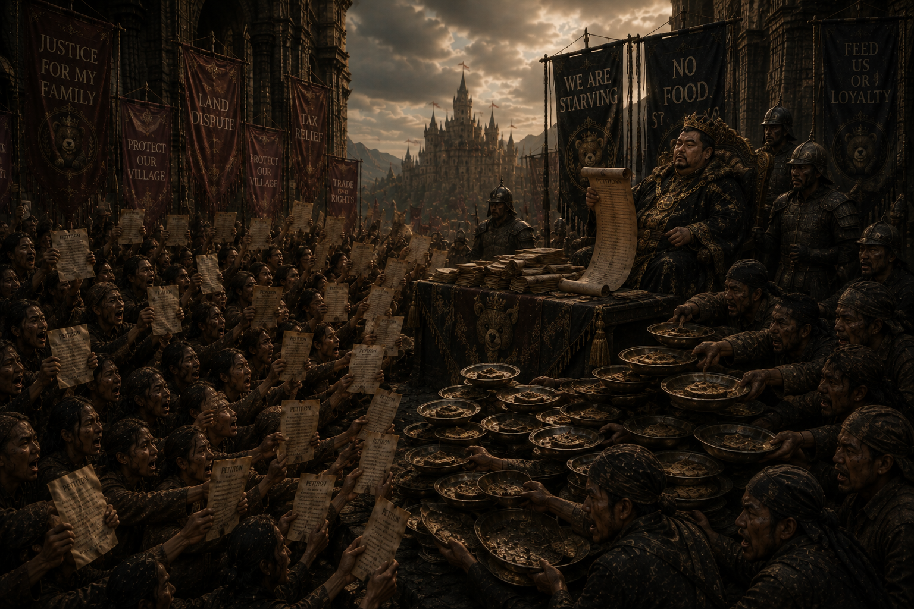

For over a thousand years, Luzon has been divided — the North against the South.
In the North: House Limmies — as clever as they are endearing — ruled by their Lord, Lomer: a patient man, kind to a fault.
In the South: House Jalandoni, seated at their capital Nuvali, ruled by Chalyn — bannermen of the Koi, whose house words are carved above every gate: "Men are trash."



Two houses, nagsusungitan for over a thousand years — further apart in pride than the sea between them.
A thousand years of rage-baiting and pettiness.
Every name-day tourney, every harvest feast, a fresh excuse to prove whose land is greater.
North against South. Never once at the same table.

But beyond both halls, a different siege was rising — not of swords, but of scrolls and hands looking to take away their food.
Thousands of petitions. Thousands of voices, each demanding to be heard first — looking to overwhelm them.
It did not just take their food. It took their patience, their sleep, their ability to think — or speak — clearly.
No house has ever stood against it alone.
They cannot win without the other.
Now Lomer of House Limmies extends his hand — not in conquest, but in truce.